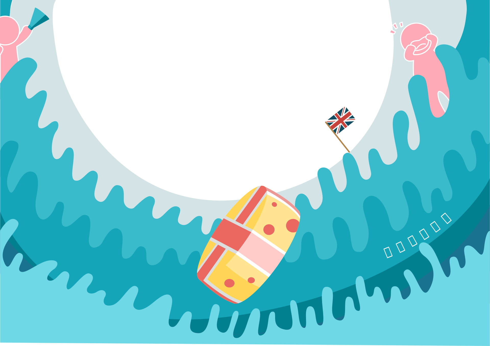
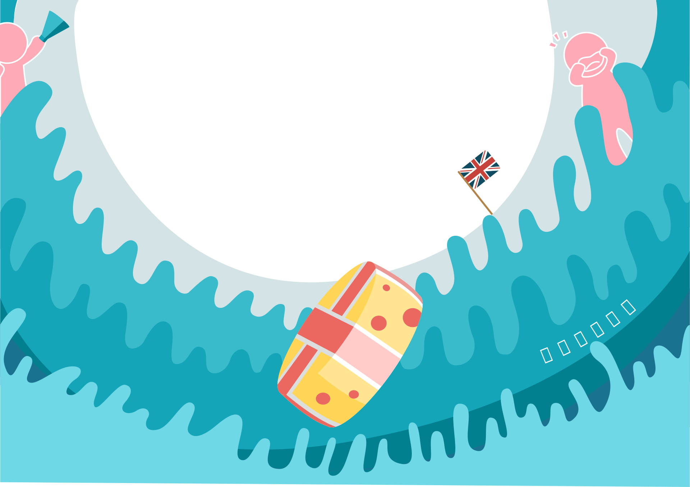
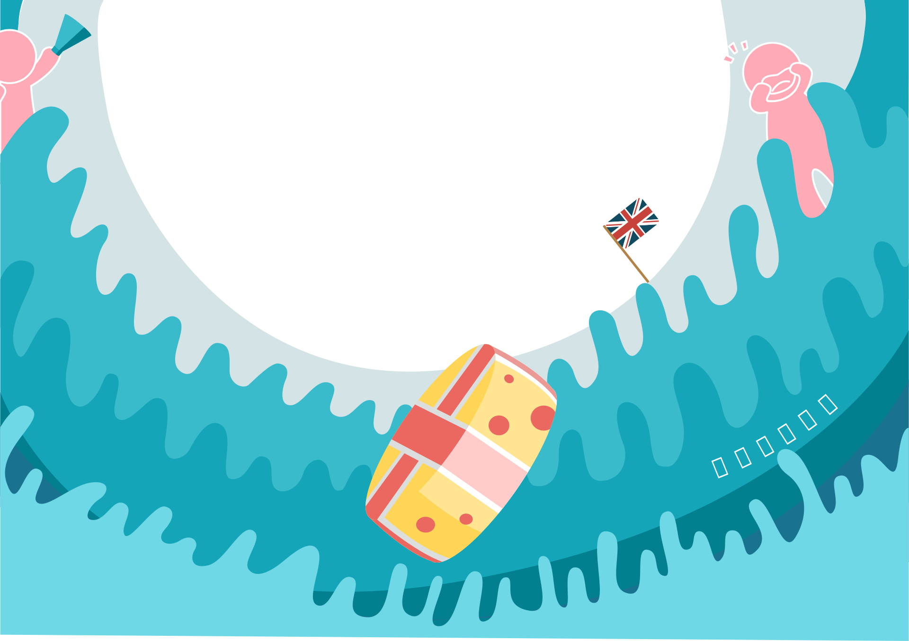
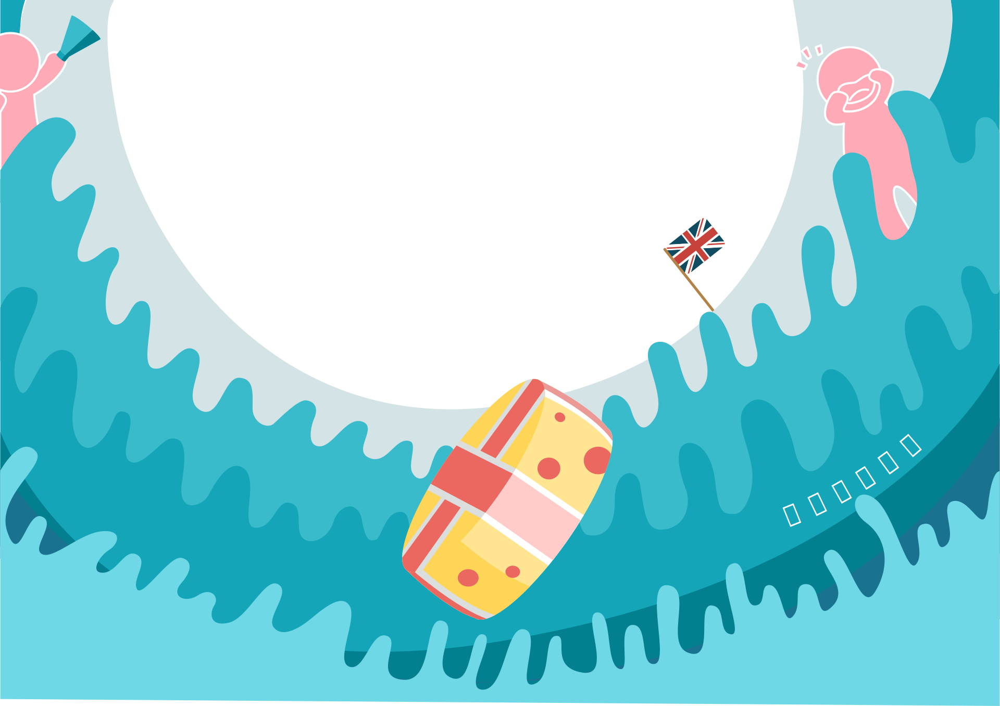

英國-梅洛斯特庫珀山
五月份的最後一個星期一
追溯到1800年前，當時的人們覺得在春天來臨時，
在山坡上擺上各種甜點可以使水果豐收，而滾起司
大賽是當時舉辦的競賽之一。
每年5月最後一個星期一，位於英國格洛斯特的庫珀山都會舉行一個傳統的滾起司大賽。比賽從19世紀初開始舉辦，
大概有200年的歷史，當時的人們覺得在春天來臨時，在山坡上擺上各種甜點可以使水果豐收，而滾起司大賽是當時
舉辦的競賽之一，因為過程非常刺激，所以每年都吸引許多從世界各地的參賽者。
參賽者要站在非常斜的山坡上，往下衝。當比賽開始，主持人會把7-9磅圓形的起司滾下山，參賽者要馬上追到起司
並拿起。理論上是以追到起司的人獲勝。 但因為起司滾下山的速度實在太快了，所以比賽勝利的條件改為最先下山者
贏得起司。
在陡峭地勢與快速的衝刺下，追起司的參賽者個個都是拚盡全力，受傷、流血都是家常便飯，所以在活動中也常看到
參賽者跌得歪七扭八，嚴重的甚至會送到醫院包紮。因為這項比賽有一定的危險性存在，所以官方舉辦的比賽在2010
年停辦，但這樣並沒有澆熄熱愛這項比賽的人們的熱情。目前是由當地民眾自行舉辦的。